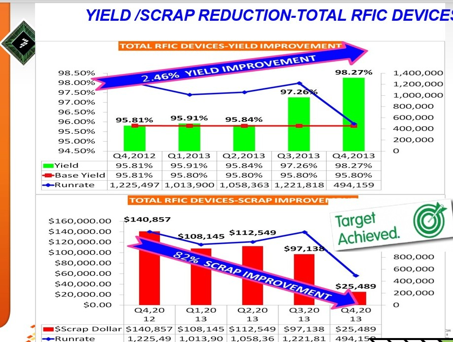
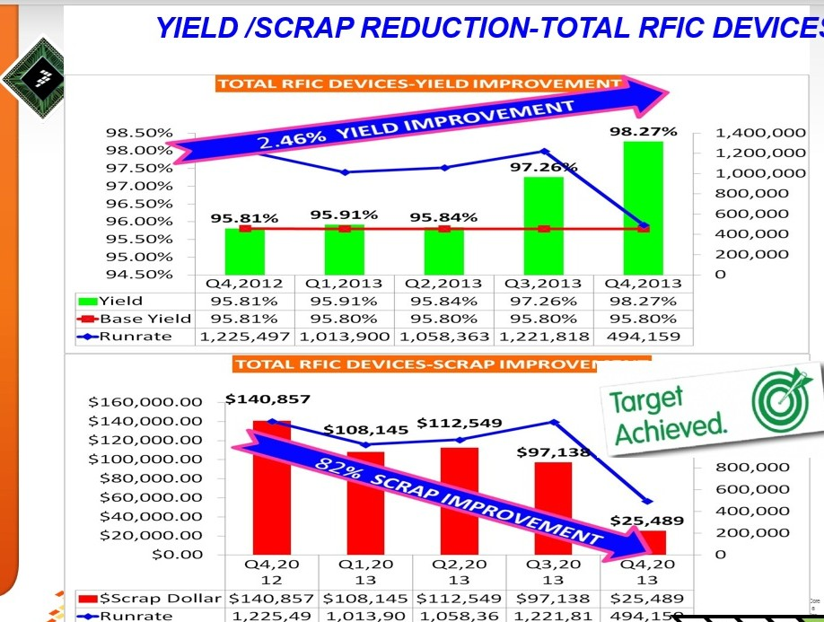

Yield Enhancement Strategy
Factory-wide yield improvement initiatives. Awarded for traceability-based yield loss diagnosis on legacy product lines.
 


Approach:
- Test Scrap Bin Cost Improvement Through ESD damages control
- Led a multiple stake holder across globe spanning manuafaturing,QA,FAB and FA LAb
- Since Global impact to yield was nominate for 2nD Diamond Chip Award from CEO